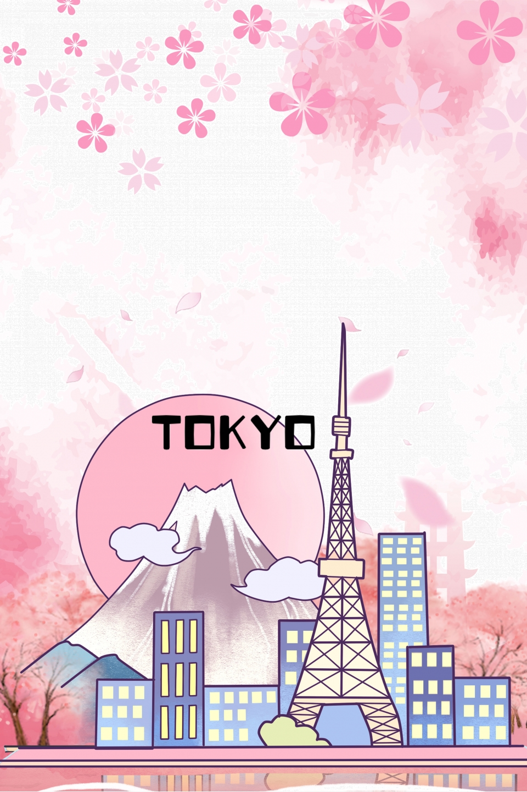

Tokyo

Ciekawostki o Tokyo
- Harajuku dzielnica Tokio słynie z alternatywnej mody ulicznej. Ta modna dzielnica jest również podobno wyrazem młodości Tokio. Każdy z niezależnych sklepów i kawiarni ma swój własny styl, który tworzy niepowtarzalną kompozycję.
- Tokyo Skytree został ogłoszony najwyższą wieżą na świecie w 2010 roku. Skytree oferuje najwyższy na świecie panoramę skywalkową oraz piękny widok dla na mniej odważnych gości.
- Kwiat czereśni jest symbolem narodowym Japonii. Drzewa te kwitną przez jeden lub dwa tygodnie w roku, począwszy od kwietnia. Okres ten znany jest jako Hanami.
- Średnio co 12 metrów w Tokio dostępne są automaty. Możesz kupić wszystko od hamburgerów po ubrania, cukierki po zimne napoje.
- Tokio znane jest z niezwykle ruchliwego transportu publicznego. Dworzec Shinjuku jest największym i najbardziej ruchliwym dworcem kolejowym na świecie. Przez dworzec codziennie przejeżdża średnio 3,70 mln pasażerów.
- W Tokio mieszka ponad 35 milionów mieszkańców, co sprawia, że jest to największy i najbardziej ruchliwy obszar metropolitalny na świecie.